2019 Material-UI Developer Survey results
Olivier Tassinari, Matt Brookes
March 16, 2019
While we are currently working on the upcoming release of Material-UI v4, we need to prioritize our roadmap for the coming year. To refine our focus, we launched a developer survey last month, to which we received 734 contributions. Thank you for your participation! The survey is now closed and this is a summary of the results.
The survey was broken into three sections, "Introduction", "About you" and "Your product".
Introduction
Here we asked for the good, the bad and the ugly. Thankfully, it's mostly good, but we can focus on the things that will make it even better.
1. How would you feel if you could no longer use Material-UI?
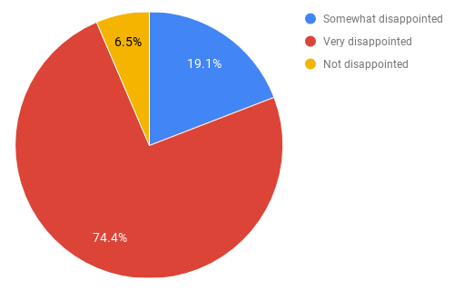An overwhelming majority of respondents (over 93%), would be disappointed or very disappointed if they could no longer use Material-UI. The benchmark for "very disappointed" is 40%, so we're on the right track. Don't worry, Material-UI isn't going away any time soon – we want to focus on making even more of you "very disappointed", as it were!
Curiously, the 6.4% who said they would not be disappointed if they could no longer use Material-UI collectively gave a Net Promoter Score of 68%, which is higher than that of all respondents as a whole, so we know they love us really. 😘
2. Who do you think would most benefit from Material-UI?
This word cloud was generated with wordclouds.com.
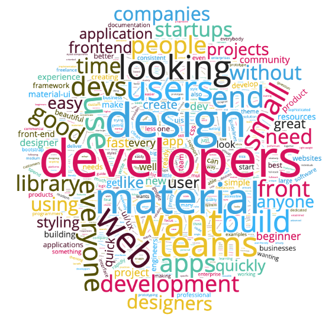Developers, developers, developers! (And "anyone" and "everyone", apparently! ) This is understandable, given the job role demographic of the majority of respondents. We'll continue to work on the developer experience, making it easier to get started with, use, and customize Material-UI.
3. What is the main benefit you receive from Material-UI?
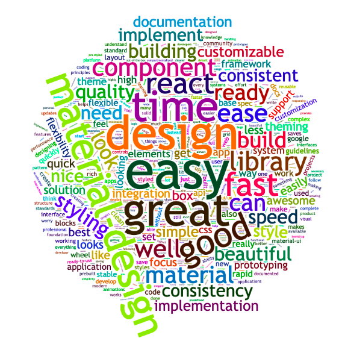The responses variously commented on being able to focus on the business logic, time saved, good looking components, ease of use, design consistency, good documentation. We'll make sure that we continue to do more of the things that benefit you the most.
4. How can we improve Material-UI for you?
We have grouped the answers into different categories. The prefix corresponds to the number of times the concern was mentioned. It’s sorted descending, with the most important concerns first:
135 More components:
- 56 Non-specific
- 21 Date picker
- 10 Autocomplete
- 9 Layout
- 8 Table++
- 5 Carousel
- 5 Slider
- 3 Video
- 2 Calendar
- 2 Menu nesting
- 2 List - draggable
- 1 Tree view
- 1 Color picker
- 1 Dense mode
- 1 For landing pages
- 1 Group avatar
- 1 Image gallery
- 1 Image picker
- 1 Menu - dropdown
- 1 Mobile
- 1 Rating
- 1 Timeline
- 1 Transfer
50 Better customization:
- 23 Non-specific
- 15 Docs
- 8 Easier
- 3 Theme
- 1 Colors
36 Better documentation:
- 11 Non-specific
- 7 More examples
- 5 Beginner tutorials
- 4 Video lessons
- 2 API pages
- 2 Icon explorer
- 1 Best practices
- 1 Customization
- 1 Global CSS
- 1 Demo source scroll issue
- 1 Server-side rendering
31 TypeScript:
- 14 Non-specific
- 13 Migrate more demos
- 3 withStyles -> makeStyles
- 1 Rewrite
24 Performance:
- 23 Non-specific
- 1 Table
19 Bundle size
17 Material Design Update
16 styled-components:
- 10 Support
- 6 Migration
14 Fewer breaking changes
10 More page layout examples
9 Theme:
- 3 More colors
- 3 Live editor
- 1 Non-material font example
- 2 Responsive typography
8 React.StrictMode support
8 React Native support
6 Accessibility:
- 4 Non specific
- 1 Docs
- 1 SkipNav
6 Hooks at 100%
4 Animations
4 Long Term Support
4 Simplification
3 Gatsby plugin
3 i18n
3 Premium themes
3 Showcase, design inspiration
2 Clear Roadmap
2 Preact support
2 Simpler: closer to DOM nodes
2 Styleless components
1 Web component integration example
1 Collect user feedback
1 Non-Material Design theme example
1 Right to left
1 Storybook addons
1 Styles: better docs
1 Testing
5. How likely is it that you would recommend Material-UI to a friend or colleague?
Developers gave Material-UI a Net Promoter Score (promoters less detractors) of 66%. Given the NPS range of -100 to +100, a “positive” score or NPS above 0 is considered “good”, +50 is “Excellent”, and above 70 is considered “world class.”
About you
6. How did you hear about Material-UI?
Multiple options were allowed.
| Channel(s) | Number |
|---|---|
| Search | 344 |
| Word of mouth | 112 |
| Search, Word of mouth | 47 |
| Search, Social | 25 |
| Social | 22 |
| Blog | 14 |
| Search, Word of mouth, Blog | 11 |
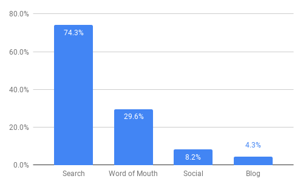
7. Which of the following best describes your current job role?
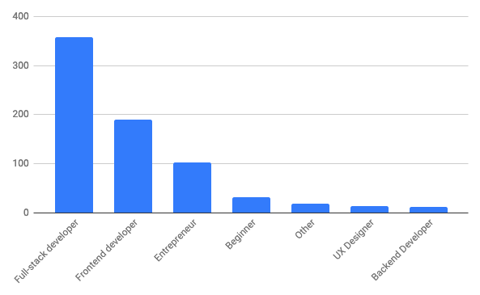No huge surprises here!
8. How big is your organization?
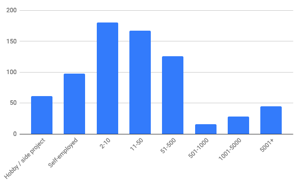Material-UI is most popular with small to medium sized organisations, perhaps because beyond a certain size, organizations have teams building their own design system and framework. We want to continue to make it easy to use the component logic of Material-UI while allowing designers to give it a bespoke look and feel for their organization.
9. How long have you been developing with JavaScript
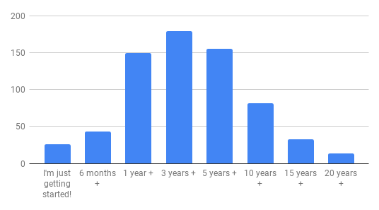A nice bell curve, with the majority of developers having 1 to 5 years experience with Javascript.
10. How long have you been developing with React?
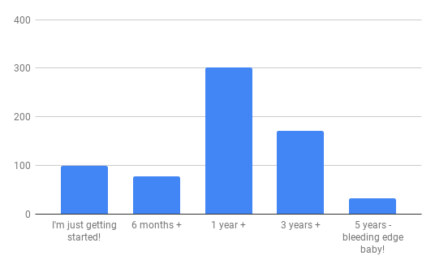11. How long have you been developing with Material-UI?
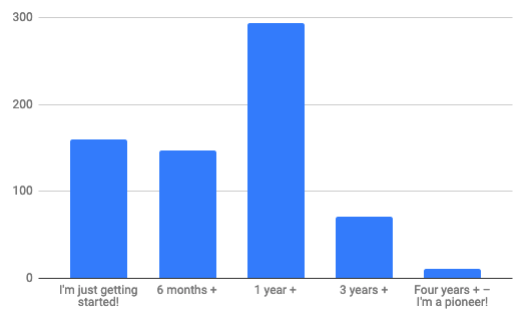We missed a trick by not including "2 years +" here, so "1 year +" looks stacked. The number of users of Material-UI continues to grow at a steady pace, and once on board, many developers stick with it.
12. What were you primarily using before Material-UI?
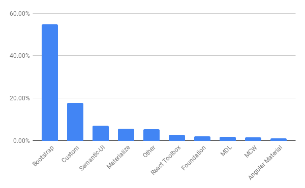Given its relative popularity, and the move from CSS / HTML / jQuery towards front-end frameworks, it should come as no big surprise to see that the majority of respondents were previously using Bootstrap. Custom solutions have also been replaced by Material-UI as your go-to UI library, along with a long-tail of other frameworks.
13. How many Material-UI based projects have you built?
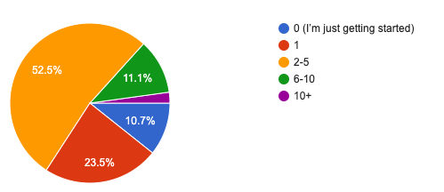Over three quarters of you have built two or more projects with Material-UI, with 13.3% having six or more projects under your belt. The 2.2% with ten or more, we salute you!
Your product
14. What are you building?
Multiple options were allowed.
- Dashboard & admin: 70%
- UI components (design system): 40%
- Business & corporate pages: 35%
- Landing pages (product): 33%
- e-commerce: 14%
- Portfolio & resume: 12%
- Blog: 8%
Dashboards are at the top of the heap, and we've long known that many of you are building internal systems that can't feature in the showcase. Let us know by opening a PR if you're bucking that trend, and have something sparkly to share! And if you're in the 40% building UI components, we'd be happy to give you a shout out in the related projects section.
15. What “delivery mechanism” are you using?
Multiple options were allowed.
- Web app (e.g. create react app): 92%
- Progressive web app (with service worker): 25%
- Server-side rendering 14%
- Static web site, hosted on a CDN (e.g. Gatsby): 13%
- Desktop app (e.g. Electron): 12%
- Native mobile app (e.g. Cordova): 6%
16. Who are you building it for?
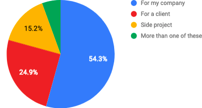17. Which JS framework are you using, if any?
Multiple options were allowed.
- Create React App: 75%
- none: 17%
- Next.js: 12%
- Gatsby: 8%
Server-side rendering isn't yet very popular. As the React ecosystem matures, we might see a big push of server-side rendering in the coming months.
18. What styling system are you using?
Multiple options were allowed.
- @material-ui/styles: 85%
- Styled components: 30%
- Good old CSS (+sass, less, etc): 24%
- CSS Modules (+sass, less, etc): 16%
- Emotion: 4%
Traditional CSS users are still prevalent (24% + 16%).
The components customization classes API was designed for these people.
It's also why we allow the generation of deterministic class names (MuiButton-root instead of jss113).
However, styled components is popular. We will work on better supporting it.
Conclusion
This data is incredibly valuable for our team. Again, thank you for participating! We want to work on the problems that resonate the most with our users. It's clear that we should:
- Support more components
- Improve the customization
- Improve the documentation
- Improve the static typings
- Reduce the overhead of the library
We will update our ROADMAP in the coming days. We will run a similar survey next year to keep track of our progress.
If you want to continue to influence our roadmap, please upvote 👍 the issues you are the most interested in on GitHub.
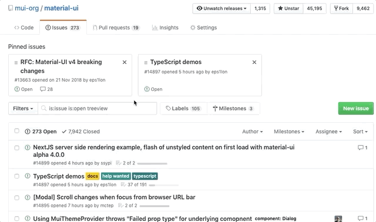Material-UI is an MIT-licensed open source project. It’s an independent project with ongoing development made possible thanks to the support of these awesome backers. Please join them ✨.